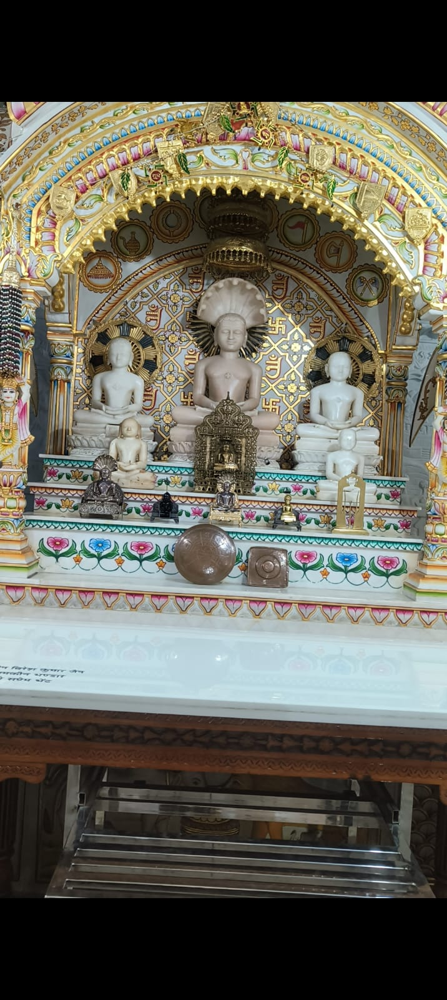
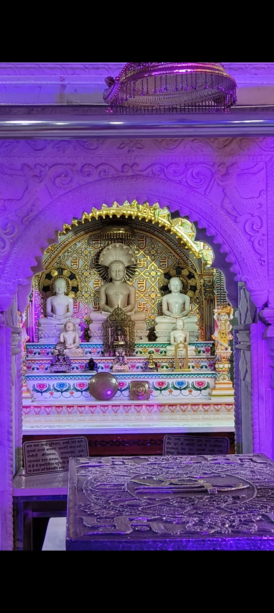
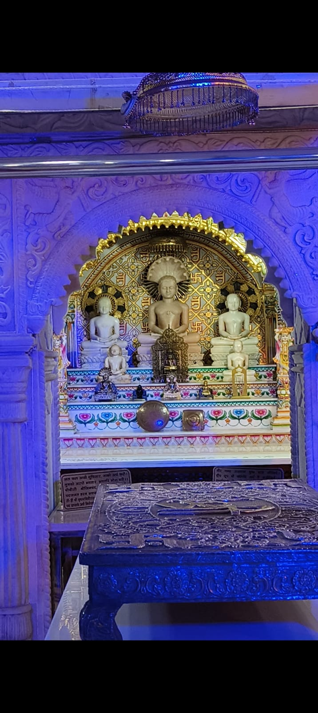

Ranila Jain Mandir
Shri 1008 Bhagwan Adinath Digambar Jain Atishay Kshetra
UPCOMING YATRA
The confirmed Kundalpur itinerary, with details available when you need them.
MONTHLY JAIN TRIPS
Jin Shasan Prabhavna Sangh's 2026 monthly trip journey across Jain destinations.
MONTHLY YATRA MAP
Pinning the places visited so far as part of Jain Youth Karnal's monthly yatra journey.
JAIN TEERTH DIRECTORY
Browse the destinations shared by our community. Open a map only when you need it.
Shri 1008 Bhagwan Adinath Digambar Jain Atishay Kshetra
One of the destinations visited during the Badegaon Yatra.
Vehalna Digambar Jain Temple Atishaya Kshetra.
Jain temple in Hansi.
Jain teerth in Hansi.
A prominent Jain temple in Hastinapur.
Jambu Dweep Rachna darshan destination.
Jalalabad temple destination.
Jain temple at Gupti Dhaam.
JIN DARSHAN DIARIES
Karnal Mandir darshan will have its own dedicated gallery, including up to eight images of the deities.




Eight image slots are prepared in assets/karnal-mandir/god-images/. Add files as god-01 through god-08 when ready.